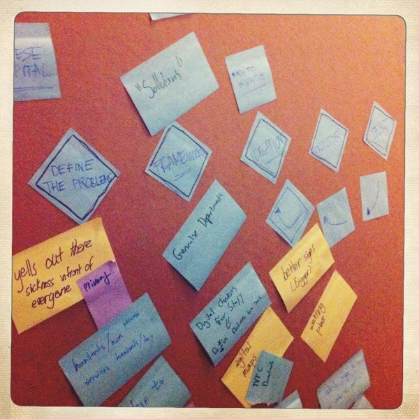
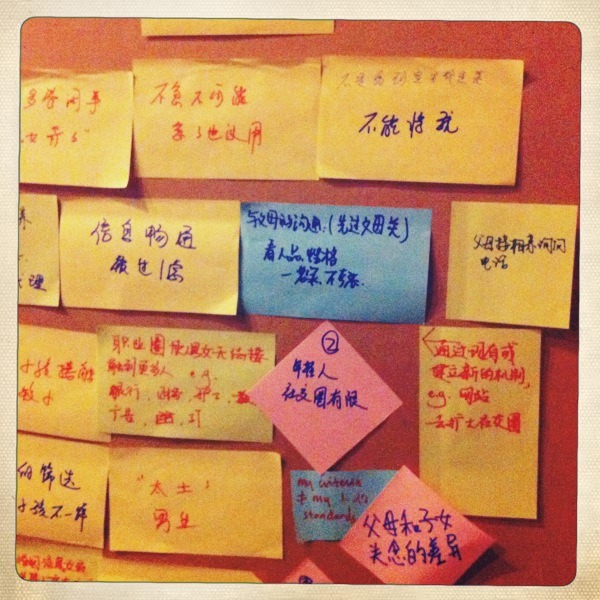
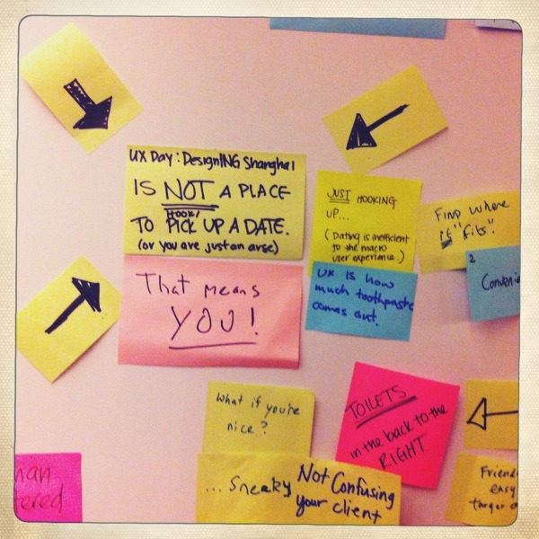
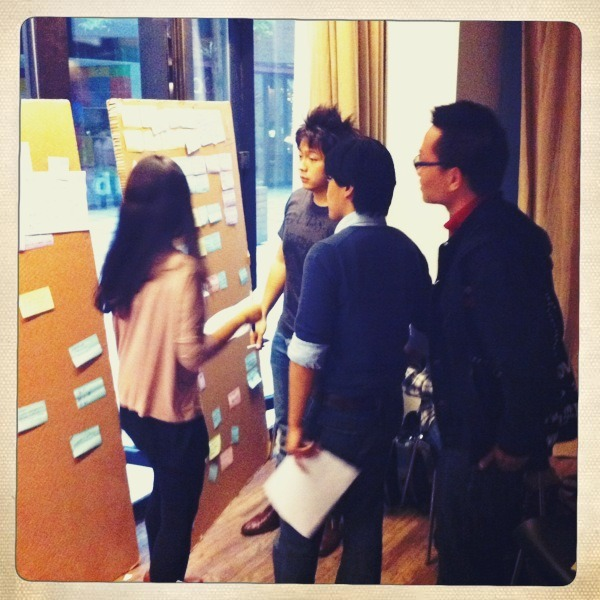
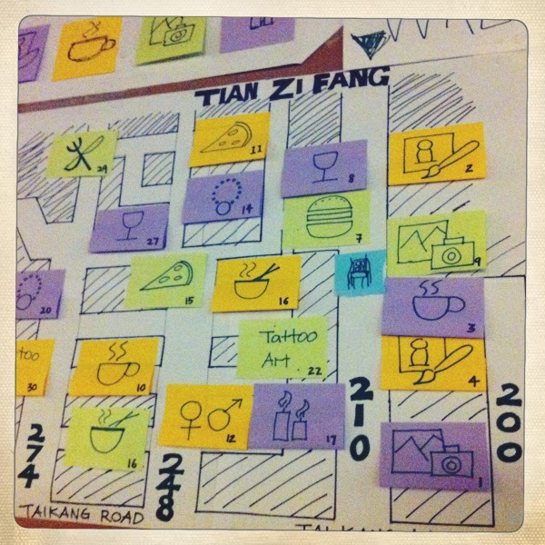
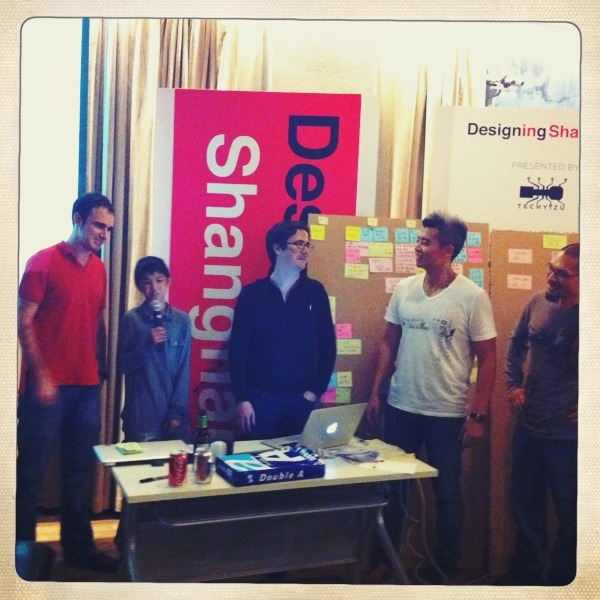
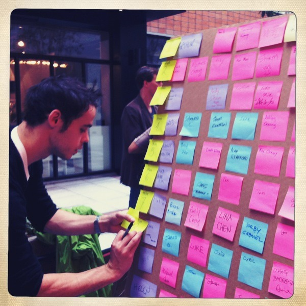
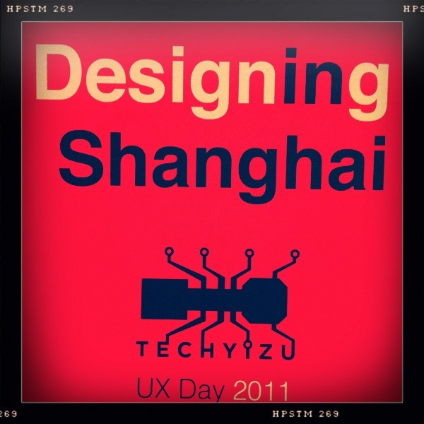
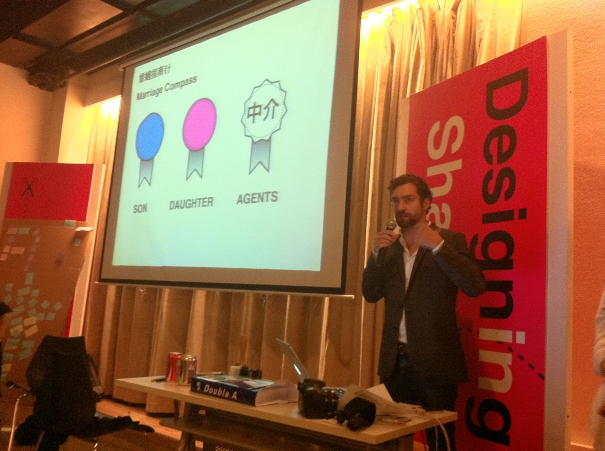
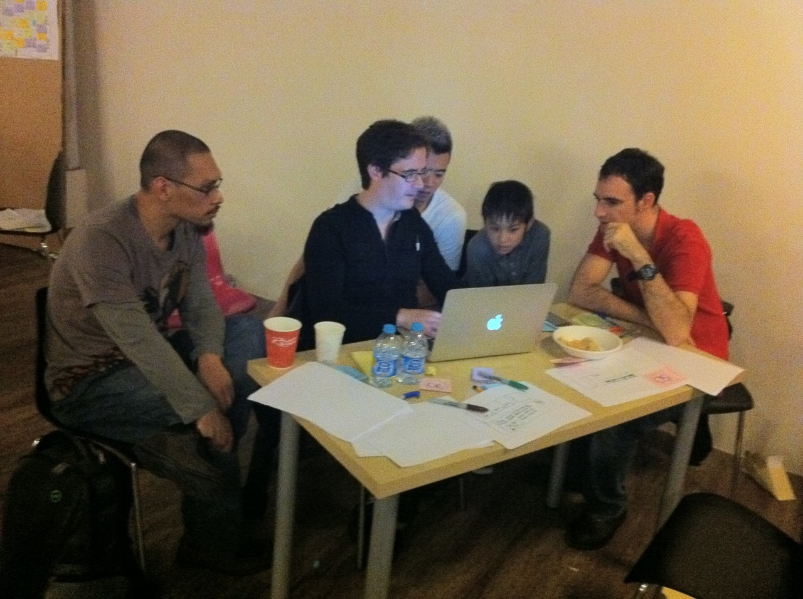

Wed, 09 Nov 2011 16:23:00 · UX · shanghai · techyizu · design · userexperience
photos of designing shanghai workshop organized










Photos of Designing Shanghai Workshop
Organized by TechYizu, Designing Shanghai was the first prototype of User eXperience design challenge event in Shanghai, held on November 5th, 2011.
The UX-DAY was a full day event in which participants are encouraged to tackle various design challenge around the city, from navigating the unique cultural phenomenon at Shanghai marriage market to road safety issues, from shopping experience to services at Chinese hospital, etc.
There was a good mix of turnouts from both local and foreign talents, including the 11 year old boy wonder, Gilbert Chan a.k.a. the robot maker, as the youngest participant.
I was involved as part of the organizing committee with TechYizu, as well as team facilitator/mentor on the d-day. My team, 上海民工 (Shanghai Worker), choose to tackle a design challenge that cover the UX in Chinese Hospital. Here’s the presentation deck that the team put online and was chosen as Slide of The Day on Slideshare.
All in all, it was fantastic day! Not too shabby at all as first event prototype, kudos to all mates at TechYizu for making it happen! So lookout for more awesome UX happenings in Shanghai in the very near future!